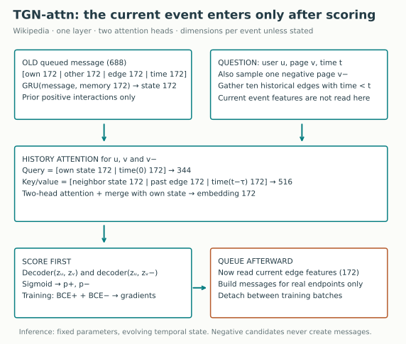
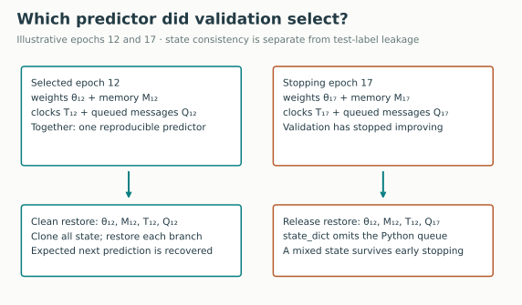
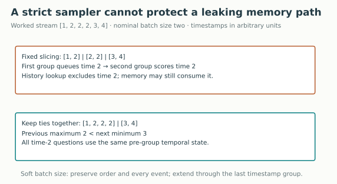
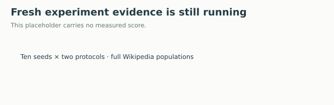

Year 3 · Quarter 3 · Lesson 110
Q3 checkpoint: a temporal GNN you can defend
One skill: defend a trained temporal GNN from data cutoffs to restored state
A good test score is only useful if the predictor could have known its inputs. Your Q3 checkpoint is to train a temporal graph network, reconstruct its evaluation, and demonstrate that changing the future cannot change an earlier prediction. You will submit working code and a short defense, rather than declare mastery because a notebook ran.
L102 supplied the TGN computation. L104 tested information access. L108 examined strict-past neighborhoods, and L109 separated event dates from actual availability. Here those pieces become one executable contract. This serves our mission: results on a relational graph must survive the same scrutiny as features built from database history.
1 · Retrieve the contract before opening the code¶
Write three answers from memory. What does a temporal model remember besides its learned weights? May one event at time 5 update the state used to score another event at time 5? What evidence would establish that an event dated yesterday was available yesterday?
Check after committing your answers
The model also has node memories, last-update clocks and queued messages. A resumable training process additionally needs optimizer state, random-generator state and a stream cursor. Under our strict-time contract, tied events cannot update each other's prediction state. Actual arrival or version history is needed to establish availability; an event date alone does not establish it.
Primary reading: Rossi et al., Temporal Graph Networks, v3, §3 for memory/messages/embeddings and Table 2 for the selected Wikipedia results. Read the released trainer alongside the paper. The two are distinct evidence sources: prose defines the method; executable code resolves many protocol details.
2 · Model architecture: score the event before learning from it¶
In plain terms. The network predicts whether a user will edit a page using earlier interactions. Only after making the prediction may it remember the edit that actually happened.
An interaction is a tuple (user, page, timestamp, event_features). This dataset provides 172 numeric features per interaction. A node is a user or page with a stable integer identifier. Node features are zero vectors in this experiment, so identity and history carry the relational information. Memory is a 172-number vector stored for each node. Its entries are learned summaries, not named factual fields.

First consume old messages. A queued message contains the two endpoint memories, the interaction features and an elapsed-time encoding: 172 + 172 + 172 + 172 = 688 numbers. A gated recurrent unit (GRU) combines that message with the previous 172-number memory. A GRU learns how much old state to retain and how much new information to write. The latest queued message per node is used here. See the paper's message/update equations and the released memory updater.
Then gather history. For each endpoint and sampled negative page, retrieve the latest ten interactions strictly earlier than the question. The cosine time encoder maps elapsed seconds into 172 learned periodic coordinates. In the diagram, t is the query time and τ is a historical interaction time, so t−τ is its age. A query joins the node state and a zero-elapsed encoding, giving 344 coordinates. Each attention key/value joins a neighbor state, historical edge features and its elapsed encoding, giving 516 coordinates. Two attention heads weight those historical inputs. A merge network returns a 172-number embedding for each endpoint. Padding stands for absent history and must not become a real neighbor.
Then score candidates. A small neural decoder maps two endpoint embeddings to a scalar logit. A sigmoid converts that number into a score between zero and one. The training loss rewards the observed user–page pair and penalizes one uniformly sampled page. Binary cross-entropy is −y log(p) − (1−y) log(1−p); y=1 means an observed pair and y=0 means a sampled pair. The optimizer changes parameters using gradients of this loss. Gradients pass through the current GRU update and attention computation; detaching between batches cuts the older computation graph. During evaluation, parameters stay fixed while node memory and queued observations still evolve. A sampled pair is not proof that the user will never edit that page; it defines the benchmark's prediction question.
Finally queue the observed interaction. Current edge features enter the message path after scoring, not the embedding used for their own score. The saved message is consumed at a later batch. The negative candidate creates no observed interaction and therefore creates no new message. The released TGN implementation makes this order concrete.
A batch is a group scored from one pre-batch state. Earlier events inside that batch do not update later predictions in the same batch. This is delayed observation, not future access. It means batch size is part of the temporal protocol, not only a performance setting.
3 · Write down what “clean” means¶
For a question at time q, history in this lesson requires both event_time < q and observed_time < q. Event time is when something happened. Observed time is when the predictor could use it. We use strict comparisons because the question asks about the state before a timestamp group; another application can choose an inclusive convention only if its ordering contract supports it.
def legal_history(event_time, observed_time, query_time):
"""Strict event history; availability also must precede the scoring group."""
return (event_time < query_time) & (observed_time < query_time)
The Wikipedia release lacks actual ingestion histories. Our measured runs therefore assume observed_time = event_time. Late-arrival fixtures exercise the two-clock rule separately. The paper experiment cannot certify an unrecorded production ingestion history.
| Boundary | Frozen choice | What to inspect |
|---|---|---|
| Time split | 70% and 85% timestamp quantiles | Complete event ID arrays, not a random row split |
| Held-out nodes | 922 sampled nodes withheld from training | Neither endpoint may enter the training population |
| Training | 81,029 events | Chronological order, training-only adjacency |
| Validation / test | 23,621 events each | Validation selects; test reports once per selected checkpoint |
| New-node validation / test | 12,016 / 11,715 events | At least one endpoint unseen in training |
| Negative candidates | Released destination pools and seeded random streams | Preserve pools, collisions and unused source draws |
| Visibility | Strict-past adjacency; release event-time assumption | Future indexing is acceptable only if retrieval excludes future records |
The complete stream has 157,474 interactions. Withheld-node filtering makes the training population smaller than 70% of that count. Evaluation uses the full adjacency index, which can restore historical context involving held-out nodes. “Unseen during fitting” does not mean “forbidden from all evaluation history.” This is the released benchmark contract; state that distinction when reporting inductive performance.
A database callback. Link prediction here scores an interaction before observing it. It is not L109's future-window supervised target. For a future-window target, fitting also requires that its outcome window and arrival/completeness conditions have matured. Do not transplant the Wikipedia event schedule into a database prediction task without writing that label contract.
4 · A checkpoint is more than a weight file¶
In plain terms. Loading the right recipe with the wrong remembered history gives a different predictor.
Suppose validation selects epoch 12, but training stops at epoch 17. An epoch is one pass over the training events. Early stopping ends optimization after validation fails to improve for five epochs. The released trainer saves learned parameters and registered buffers in state_dict. Its queued messages live in a separate Python dictionary. Restoring the selected state_dict leaves the stopping epoch's queue in place.
This is a state-consistency defect, not by itself evidence of future-test labels leaking. Both queues can come from pre-test observations. Yet the predictor combines components produced by different weights. You cannot defend it as the single selected validation state.

The clean-arm restore is small because the important work is defining the complete state:
def restore_checkpoint(model, checkpoint):
"""Restore weights and all temporal state from the same selected epoch."""
model.load_state_dict(checkpoint['weights'], strict=False)
model.restore(checkpoint['temporal_state'])
The snapshot contains memory, last-update clocks and cloned queued messages. Cloning prevents later evaluation from silently changing the saved object. Each test branch restores the same selected post-validation snapshot, so running the all-event branch cannot contaminate the new-node branch.
Prediction replay versus optimization resume. Our saved artifacts support replaying evaluation. They are not full mid-epoch optimizer resumes: optimizer moments, random-generator state and exact stream position would also be necessary. Completed fits are durable artifacts; partially completed fits do not count as completed seeds.
5 · Equal timestamps expose a second hidden state boundary¶
Consider event times [1, 2, 2, 2, 3, 4] and nominal batch size 2. Ordinary slicing produces [1,2] | [2,2] | [3,4]. The first batch can queue a time-2 message that the second batch consumes while answering time-2 questions. A strict-past neighborhood filter does not repair this memory path.
The clean batcher extends a batch through its final timestamp group: [1,2,2,2] | [3,4]. The size limit is soft. Every previous batch now ends strictly before the next begins. Oversized timestamp groups consume more memory, so inspect their maximum size before scaling to another dataset.

def strict_batches(events, size=200):
"""Soft size limit: extend the batch through its last timestamp group."""
if size < 1:
raise ValueError('Batch size must be positive')
times = events['t']
if not np.all(np.isfinite(times)) or np.any(np.diff(times) < 0):
raise ValueError('Finite chronological timestamps required')
start = 0
while start < len(times):
end = min(start + size, len(times))
while end < len(times) and times[end] == times[end - 1]:
end += 1
yield {k: v[start:end] for k, v in events.items()}
start = end
Full-data boundary census. This counts boundaries at which equal-time memory could cross; it does not count affected predictions.
| Population | Events | Fixed-slice tied boundaries | Clean tied boundaries | Largest clean batch |
|---|---|---|---|---|
| train | 81,029 | 9 | 0 | 201 |
| val | 23,621 | 4 | 0 | 201 |
| test | 23,621 | 4 | 0 | 201 |
| new_val | 12,016 | 1 | 0 | 201 |
| new_test | 11,715 | 0 | 0 | 200 |
Worked answer, including a no-JavaScript fallback
At size 2, fixed slices cross one equal-time boundary. Extending the first slice through all three time-2 events gives two groups and zero tied boundaries. A weights-only restore still fails even with these clean groups: batching and checkpoint consistency are separate requirements. Actual late arrivals still require observed timestamps; neither change creates missing arrival evidence.
The clean arm also always restores its best validation epoch when the maximum epoch count is reached. The release uses the final epoch in that situation. These are three declared protocol differences: complete state restoration, tie-safe batching, and consistent best-validation selection. The comparison tests that combined policy. It does not isolate a causal accuracy effect of any one repair.
6 · Reproduce first, then interpret the intervention¶
Held fixed: full Wikipedia input, model architecture, features, optimizer, maximum 50 epochs, patience 5, nominal batch size 200, learning rate 0.0001, dropout 0.1, ten explicit seeds and released split/candidate-pool definitions. Varied: the three clean-state policies above. Changes in grouping alter random-number consumption and optimization trajectories, even for the same initialization seed. Seed pairing helps compare the two systems; it does not imply identical negative arrays throughout training or evaluation.
Published lane: fresh release-compatible training targets the two TGN-attn Wikipedia Table 2 AP cells: 98.46% and 97.81%. The numerical criterion is an absolute mean gap at most 0.5 percentage point, fixed before the new runs. A percentage point is an absolute difference between percentages: 98.46% to 98.96% is +0.50 percentage point. This criterion is a descriptive comparison, not a statistical equivalence test. See the paper and the exact reproduction contract.
Course lane: ten fresh clean-state fits. No published target is assigned to this changed protocol. A cleaner contract may increase, decrease or leave the score unchanged. The reason to repair the contract is that it can be defended, not that it maximizes the reported number.
Average precision (AP) summarizes positive retrieval as the score threshold changes. The release calculates AP separately within each scoring batch, then takes an equally weighted mean of those batch values. Pooled AP instead ranks all predictions together. These are different metrics. A short final batch gets the same batch-mean weight as a full batch. Because the clean arm changes batching, we report both metrics and expose batch IDs in the saved predictions. Pooled results remain conditional on the actual candidates drawn by that arm.
Work a tiny metric example. Batch A scores its positive 0.9 and negative 0.8. Batch B scores its positive 0.2 and negative 0.1. Each batch ranks its positive first, so each AP is 1 and their mean is 1. Pooling gives the label order positive, negative, positive, negative. With no score ties, AP is the mean precision at positive ranks: (1 + 2/3) / 2 = 5/6, about 83.33%. Both calculations are correct; they answer differently aggregated questions. Our independent evaluator also handles tied scores by grouping equal thresholds.
Fresh full-data runs: RUNNING. No completed ten-seed mean is claimed.

Read each seed as an initialization on one fixed data split. The displayed standard deviation is sample standard deviation across seeds, measured in percentage points. It does not measure uncertainty across different databases or independent time splits.
Scope check. A complete named Wikipedia reproduction is not reproduction of the entire paper. Reddit, Twitter, dynamic node classification, competitor models and the ablation suite remain outside this lesson. Modern libraries and explicit independent seeds differ from the historical environment and original continuously consumed random stream. Historical identity remains INCOMPARABLE; full-paper reproduction remains NOT_ESTABLISHED. Earlier L102 evidence is context, not a substitute for these fresh runs.
7 · Make the audit capable of catching a failure¶
A useful audit changes something the predictor is forbidden to know and asks whether an earlier prediction changes. A passing score or a timestamp assertion at only one layer cannot substitute for that test. In the six-event fixed-weight witness, changing a time-2 feature shifts a later time-2 score by about 0.1083 under fixed slicing. Grouping ties makes all time-2 scores exactly invariant, while time-3/4 predictions still respond. That is a synthetic correctness witness, not an accuracy result.
| Test | Intervention | Required outcome |
|---|---|---|
| Current-event exclusion | Change the feature vector of the event being scored | Its score remains identical before the event is observed |
| Future exclusion | Change a strictly later edge feature | The earlier score remains identical |
| Complete-state recovery | Advance the model, then restore an earlier checkpoint | Recover exactly the saved next prediction |
| Branch isolation | Restore the selected state before each test population | Evaluation order cannot accumulate extra branch history |
| Timestamp boundary | Force a tied group across a nominal batch boundary | Clean batching keeps the group together |
| Availability | Date an event early but deliver it late | Exclude it from earlier legal history |
The repository suite rejects four deliberate faults; the notebook also rejects a broken solution for each of its three live tasks. We also compare the visible encoder's probabilities, gradients and state with the pinned original source; independently reconstruct preprocessing and split arrays; and recompute metrics from saved positive and negative probabilities. These checks answer different questions. Agreement with the original code alone cannot reveal a flaw shared with the original code.
The author contract includes exact commands, file identities, runtime/cost accounting and unrun boundaries. If a runtime cutoff ends a fit, the ledger must say INCOMPLETE. A partial trace is not one of ten completed seeds.
8 · Your checkpoint submission¶
Open the student notebook or its prepared walkthrough. The notebook contains the complete readable model and trainer; its default small training exercise is labeled separately from full-data author evidence. The full experiment gate invokes the same visible training implementation on all released populations.
- TODO: implement complete checkpoint restoration. CHECK: recover a prediction after the model has advanced and its weights have changed.
- TODO: implement tie-safe batching. CHECK: preserve every input event exactly once and reject equal-time boundary leakage.
- TODO: implement two-clock eligibility. CHECK: reject late arrivals and strict-time ties, then audit the full real-data batch frontiers under the declared arrival assumption.
- RUN: train, select with validation, restore both evaluation branches, and independently inspect predictions. Compare full reproduction targets only for the release arm.
- EXIT: submit your code, a fresh run report, one failing time-travel counterexample, and a 200–300 word defense of the split, candidates, state restoration and evidence limits.
A strong defense explains why a strict sampler can coexist with leaking memory, why matched paper scores cannot establish actual availability, and why fixing checkpoint consistency does not guarantee a higher AP. Prepared author evidence does not complete your checkpoint: PENDING_WRITTEN_DEFENSE remains until your own explanation and code are reviewed.
Tomorrow, reconstruct the four pieces of inference state without notes. Next week, invent a late-arriving event and a tied-timestamp counterexample. These spaced retrieval tasks test retention beyond today's ability to follow the notebook.
The next quarter moves to OGB benchmark reproduction. Carry forward this habit: define the exact prediction question and evaluator before treating a leaderboard number as evidence. Keep the temporal checkpoint reference nearby. Ask the teaching agent follow-up questions about any unclear computation or submit your EXIT for feedback.